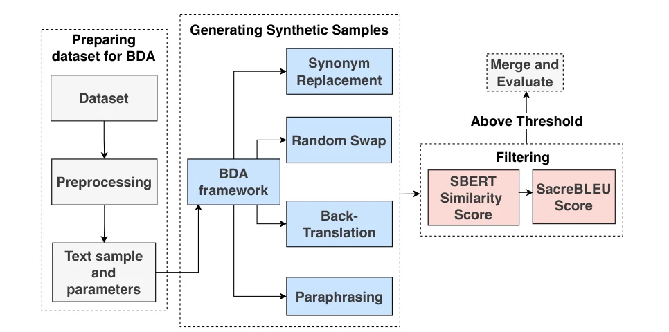
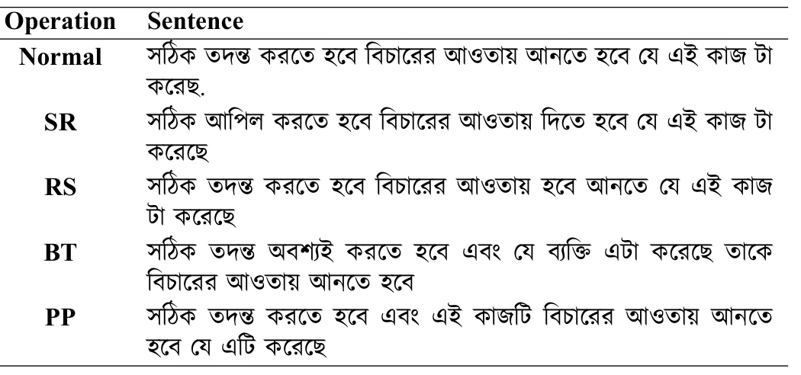
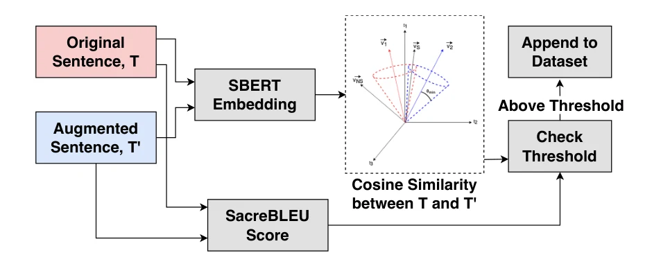
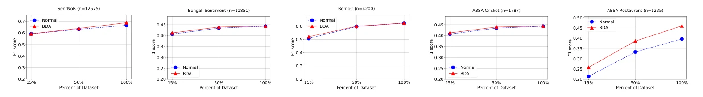
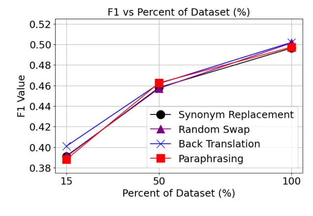

Preprint · 2024
BDA: Bangla Text Data Augmentation Framework
{kind=link}

In short
BDA augments Bangla text with two rule-based and two transformer-based methods, then keeps only outputs that preserve the meaning while changing the wording. Across five classification datasets, training on half the data plus BDA matches or beats full-data training on three.
Full abstract
Data augmentation involves generating synthetic samples that resemble those in a given dataset. In resource-limited fields where high-quality data is scarce, augmentation plays a crucial role in increasing the volume of training data. This paper introduces a Bangla Text Data Augmentation (BDA) Framework that uses both pre-trained models and rule-based methods to create new variants of the text. A filtering process is included to ensure that the new text keeps the same meaning as the original while also adding variety in the words used. We conduct a comprehensive evaluation of the framework’s effectiveness in Bangla text classification tasks. Our framework achieved significant improvement in F1 scores across five distinct datasets, delivering performance equivalent to models trained on 100% of the data while utilizing only 50% of the training dataset. Additionally, we explore the impact of data scarcity by progressively reducing the training data and augmenting it through BDA, resulting in notable F1 score enhancements. The study offers a thorough examination of BDA’s performance, identifying key factors for optimal results and addressing its limitations through detailed analysis.
Four augmentation operations
Each training sentence is rewritten by one randomly chosen operation:
- Synonym replacement: replace n non-stop words with their nearest neighbours in a Bangla Word2Vec space.
- Random swap: swap the positions of two words, n times.
- Back-translation: translate to English and back with BanglaT5 fine-tuned on BanglaNMT, which reshapes the grammar.
- Paraphrasing: rewrite with BanglaT5 fine-tuned on BanglaParaphrase.
The augmented copy is merged 1:1 with the original data, so half the final set is synthetic; more would risk over-representing synthetic text. Rule-based methods use a small n of 2 to keep sentences close to their source. Random swap matters for informal text, where misspellings and missing grammar defeat the model-based methods.
{kind=link}

Meaning-preserving filter
Augmentation can drift far enough to change a label. Each candidate is therefore compared with its source twice. A multilingual Sentence-BERT model checks semantic similarity, and SacreBLEU checks lexical overlap. A candidate is kept only if it stays close in meaning (85% to 99% similarity here, so near-copies are dropped too) while sharing little wording (lexical similarity below 45%). Thresholds are dataset-specific and adjustable.
{kind=link}

Experimental setup
Five datasets were chosen to cover class imbalance, data scarcity, noisy text, and low variation between samples. Training sets were cut to 15%, 50%, and 100% with stratified sampling, keeping the class ratios, to see how far augmentation can stand in for missing data. Each setting was run with BanglaBERT and with an SVM over TF-IDF word (1–3) and character (2–5) n-grams.
Benchmark datasets.
| Dataset | Task | Samples | Classes |
|---|---|---|---|
| BemoC | Multi-class emotion classification | 48,328 | 6 |
| SentNoB | Sentiment in noisy, informal text | 15,728 | 3 |
| Bengali Sentiment | Balanced sentiment classification | 11,851 | 3 |
| ABSA Cricket | Aspect-based sentiment | 1,787 | 5 |
| ABSA Restaurant | Aspect-based sentiment | 1,235 | 5 |
Findings
Open a finding for the detail and evidence behind it.
Half the data plus BDA can match the full dataset.
With BanglaBERT, 50% of the data plus BDA beats training on all of the original data on ABSA Cricket and Bengali Sentiment, and comes within 0.14 F1 points on ABSA Restaurant. Augmentation also improves every BanglaBERT setting shown here.
BanglaBERT F1 (%), original → with BDA.
| Dataset | 15% | 50% | 100% |
|---|---|---|---|
| SentNoB | 64.86 → 64.97 | 66.91 → 68.10 | 70.73 → 72.03 |
| BemoC | 59.61 → 61.94 | 68.98 → 69.39 | 70.41 → 70.56 |
| Bengali Sentiment | 45.12 → 45.55 | 48.95 → 49.19 | 49.08 → 49.19 |
| ABSA Cricket | 38.68 → 46.98 | 49.27 → 56.05 | 54.83 → 57.45 |
| ABSA Restaurant | 23.62 → 26.14 | 38.01 → 45.59 | 45.73 → 55.29 |
Gains hold across data sizes, and help even when data is scarce.
Even at 15% of the training data, BDA adds 8.30 F1 points on ABSA Cricket and 2.52 on ABSA Restaurant with BanglaBERT. On very small sets augmentation behaves partly like oversampling; with more data, the added diversity helps the model generalise.
{kind=link}

No single augmentation method wins everywhere.
Rule-based methods keep more of the original wording; random swap preserves meaning best because it adds no new words. Back-translation and paraphrasing restructure whole sentences. Averaged over all datasets, the four methods trade places, so a mix works better than any one of them.
{kind=link}

Similarity of augmented text to its source (%), and where each method fits best.
| Method | Lexical | Semantic | Best suited to |
|---|---|---|---|
| Synonym replacement | 59.61 | 83.86 | Small to medium datasets |
| Random swap | 48.57 | 94.06 | Large, saturated datasets |
| Back-translation | 11.29 | 79.15 | Small, highly constrained datasets |
| Paraphrasing | 15.40 | 86.97 | Any dataset size |
BanglaBERT benefits more than SVM.
BanglaBERT shows the more robust improvement across datasets and sizes, as it captures the contextual variation augmentation introduces. Model-based and rule-based augmentation land within one to two F1 points of each other.
Cite this paper
@misc{tariquzzaman2024bdabanglatextdata,
title={BDA: Bangla Text Data Augmentation Framework},
author={Md. Tariquzzaman and Audwit Nafi Anam and Naimul Haque and Mohsinul Kabir and Hasan Mahmud and Md Kamrul Hasan},
year={2024},
eprint={2412.08753},
archivePrefix={arXiv},
primaryClass={cs.CL},
url={https://arxiv.org/abs/2412.08753},
}